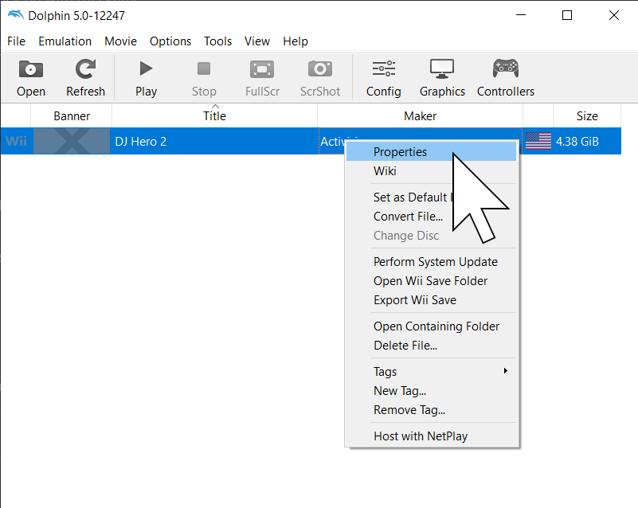
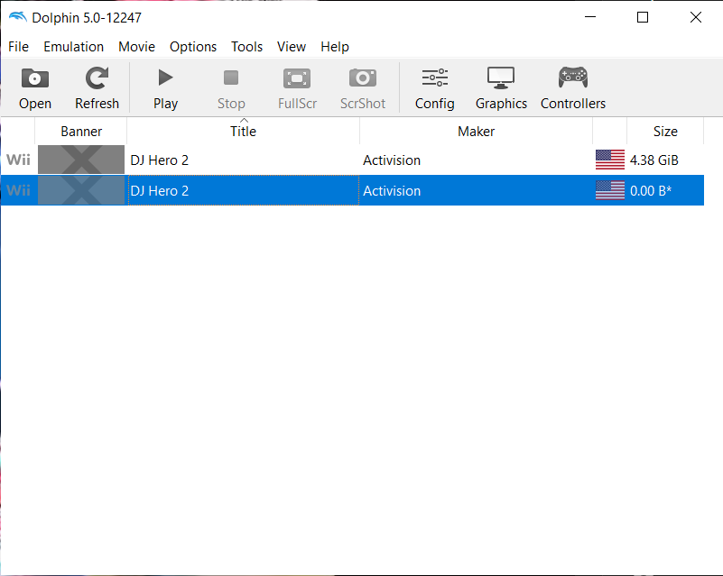

Extracting Wii Version of DJH2
This guide assumes that you have ripped a backup of djh2 from a hacked Wii or Wii U and you have it as an ISO file
Tools Needed
- Latest Dolphin Beta: https://dolphin-emu.org/download/
- ArchiveExplorer: https://drive.google.com/file/d/17tLjaPe6ltrFAETqO1yZyfrMkEIsiV7k/view
Before Extracting
Download and install the latest beta for dolphin from the site above
If not already on your pc, copy the dump from your sd card to any location on your pc
Your ISO file will be referenced through the entire guide as {ISO_LOCATION}
The destination folder with all of the extracted files will be referenced as {EXTRACTED_LOCATION}
Extracting
Add your {ISO_LOCATION} in Dolphin's search path by clicking into General Settings -> Paths -> click the Add Button -> select your {ISO_LOCATION}.
Also enable Search Subfolders from the toggle on the left
After that your copy of DJH2 should show up inside Dolphin.
From that, right-click the entry -> Properties to open up the dialog

From the properties dialog, scroll right until you see the Filesystem tab, then right-click Disc -> Extract Entire Disc.
It will ask for a folder location to save the files to, and this will be your {EXTRACTED_LOCATION}. Select your folder and wait for it to finish.
After it's done, open {EXTRACTED_LOCATION}\DATA\Files\Wii and you should have something like this:
Now it's ArchiveExplorer time! Download it and extract it from the link above. Finally, open ArchiveExplorer and open {EXTRACTED_LOCATION}\DATA\Files\Wii\DISC0.IMG.part0. You should have something like this:
Now Select all files -> Extract selected files and select {EXTRACTED_LOCATION}\DATA\Files\Wii as the destination folder.
After this step, your {EXTRACTED_LOCATION}\DATA\Files\Wii folder should look like this:
You're almost done! Rename {EXTRACTED_LOCATION}\DATA\Files\Wii\DISC0.IMG.part0 and part1 to DISC0.BAK.IMG.part0 and DISC0.BAK.IMG.part1
(You can rename to anything different or even delete them entirely, but this is not recommended and having a backup is always good).
Now add {EXTRACTED_LOCATION} as another path in Dolphin the same way you added {ISO_LOCATION} and another entry for DJH2 should appear.

YOU ARE DONE! The DJH2 entry with size 0.00B is your extracted version of DJH2, ready for adding customs!
GOOD JOB!üëèüëèüëè